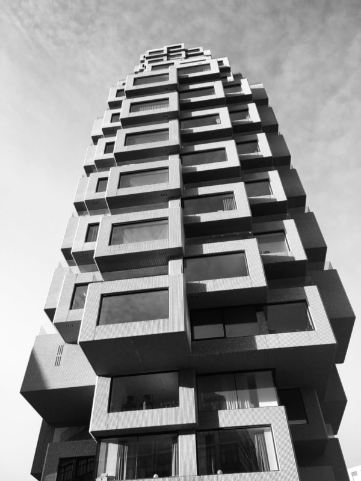
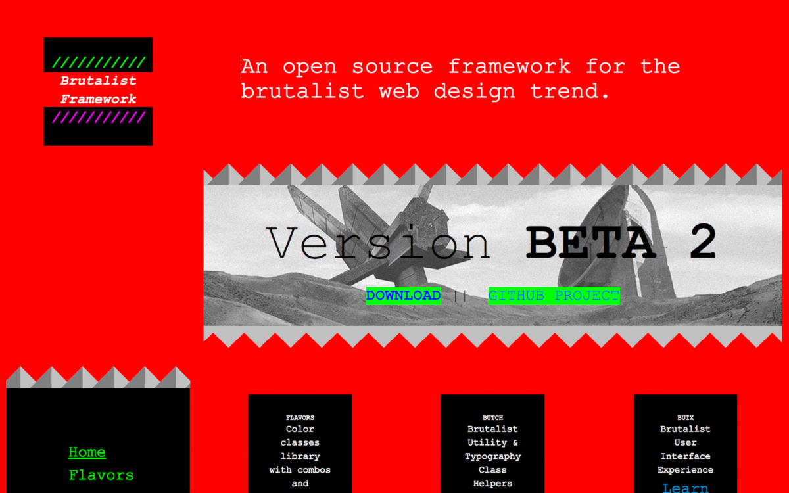
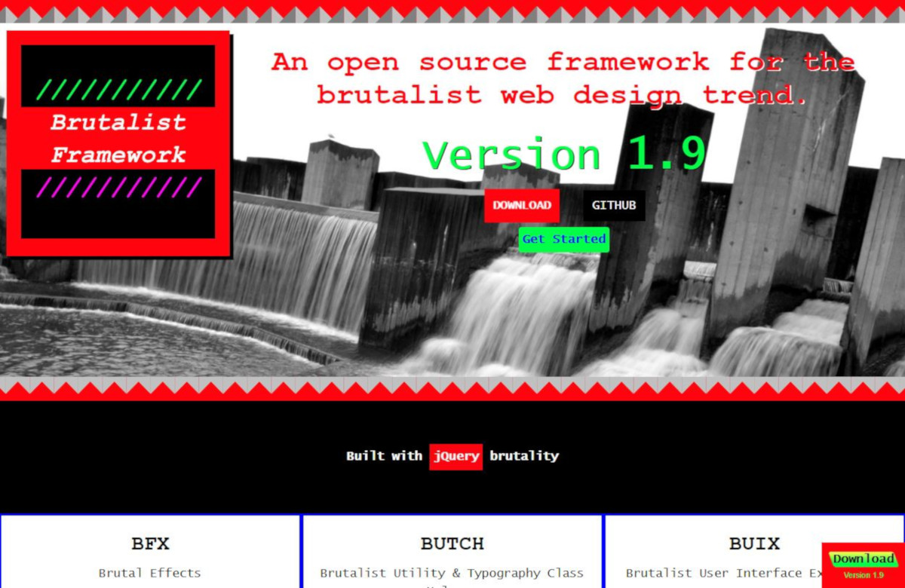
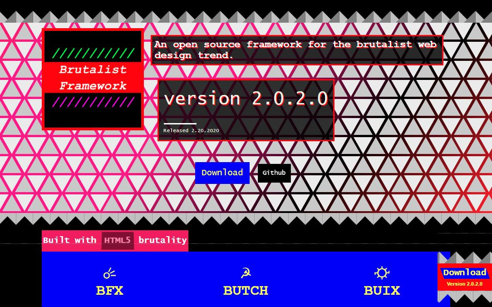
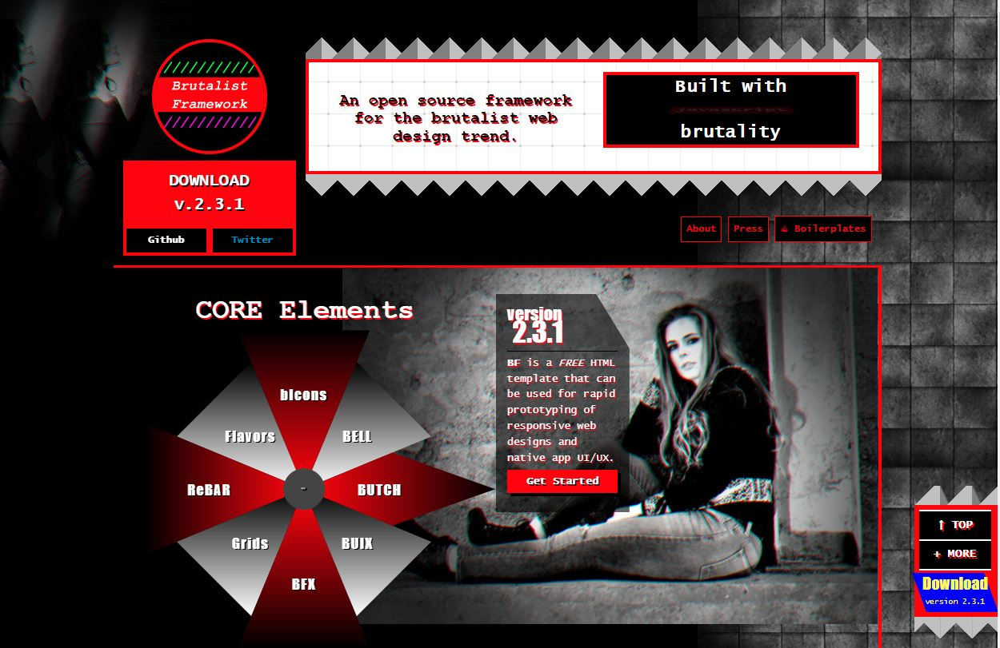
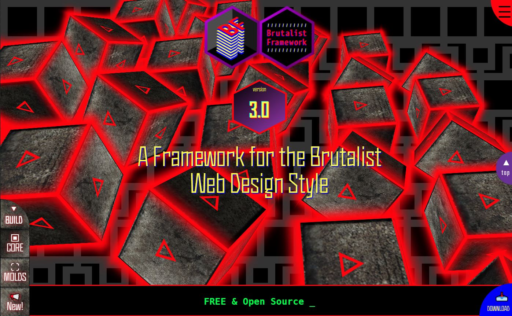

Brutalist Framework is a free and open source collection of HTML templates, CSS libraries, and javascript resources specifically for the brutalist web design style.
Brutalism is a style of architecture that took off after World War II. Reaching its peak in the ‘50s and ‘60s, the style was a reaction to ornate, over-designed structures of preceding decades. The simple and raw of this architectural style allows for creatively ambitious structure design and objectives.
Brutalism in web design is inspired by this distinctive style.
To learn more, read our FREE e-book:
To build brutality with Brutalist Framework, you'll need basic background and understanding of the following skills:
BF is ideal for beginner and novice web designers and developers who aspire to build their background, experience, and skillset in web design. BF is most ideal for:
Any creative project is made from a solid framework composed of raw components that can be used to create a product with a concrete purpose.
BF was created to provide a free and open resource to beginner and novice web designers and developers to encourage their professional journey and realize their true creative potential.The purpose of BF is to:
BF is intended as a solid foundation and starting point for developers to construct and create crude websites or web applications.
Brutalist web design philosophy follows the CRUDE convention:
Creatively Cynical & Confrontational
Raw, Rugged, & Real
Uncompromisingly Unconventional & Unpolished
Deliberately Deconstructive & Dysfunctional
Extremely Exciting & Enthralling
 This distinctive approach to web design is for those who desire and aspire to embody their unlimited creative potential. These more creatively cynical and raw designs may not be widely accepted by most target audiences. Through the brutality of trial and error can a brutalist design truly evolve into something successful.
While exploring Material Design trends and resources, we stumbled upon the term "brutalist web design", and quickly found that we identified with this newly emerging trend. Seeing the lack of a simple and raw "framework" designed specifically for this trend, we conceived the concept of a "Brutalist Framework". By late fall 2016, a "BETA" version was released.

The first official version was released on April 12, 2017. Development of the initial release continued through 2019.

Version 2 introduced significant changes to the design and structure, as well as the introduction of bIcons.

A new multimethod grid layout system project was created: Blueprint Grid. This was to become a separate, standalone project.
Versions 2.3 - 2.3.3 are known as the "Resident Evil" versions, due to the pretty pondering perched kitty and Umbrella Corporation interface.

In January 2022, we created our first e-book: Intro to Brutalism in Web Design, which was to be the first of multiple reference guides relating to brutalist web design.
Development of the BETA version of a flat-file CMS written in PHP was introduced as a separate project.
Involving a complete re-structuring and re-work of the core components, version 3 introduced basic PHP components and content based on XML and CSV files.

Clarification for the direction of BF becomes more defined. BF is now broken down into three distinct components: dynamic (PHP) versus static (HTML) builds, Blueprint Grid, and Reference Guides. Development of Brutal CMS continues.

BF will always be open source and available for free. Future versions will evolve, implementing new design styles and code elements. New projects may branch off from BF. Ultimately, the future of BF is one of revolutionary evolution, with the purpose of serving the development and progress of the digital creative marketing space.
For purposes of transparency, you can get an idea of what's being planned for future versions by viewing our Roadmap:
View Roadmap »